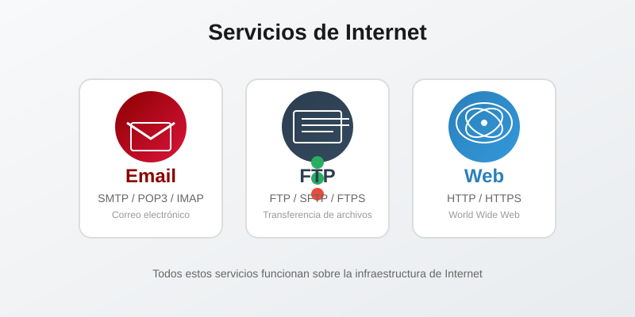

Fundamentos de la Web y Entorno de Trabajo
Unidad I - Introducción al Desarrollo Web
Objetivos de la Sesión
Al finalizar esta sesión, serás capaz de:
- Comprender la diferencia entre Internet y la World Wide Web
- Conocer cómo funciona la comunicación cliente-servidor
- Instalar y configurar Visual Studio Code con extensiones útiles
- Crear tu primera página web con estructura HTML básica
¿Qué es Internet?
Internet es una red global de computadoras interconectadas que comparten información a través de protocolos estándar.
Analogía sencilla
Imagina Internet como el sistema de carreteras de un país. Las carreteras conectan ciudades (computadoras) y permiten que personas (datos) viajen de un lugar a otro.
Características principales:
- Red descentralizada: No existe un servidor central
- Protocolos estándar: TCP/IP para comunicación
- Servicios: Correo electrónico, transferencia de archivos, web, etc.

Internet vs World Wide Web
Es común confundir ambos términos, pero no son lo mismo:
🌐 Internet
La infraestructura física de cables, servidores, routers y protocolos que conecta computadoras en todo el mundo.
Es como el sistema de carreteras
🖥️ World Wide Web
Un servicio que funciona sobre Internet. Permite acceder a documentos y recursos mediante navegadores.
Es como los vehículos que circulan por las carreteras
¿Cómo funciona la Web?
Cuando visitas una página web, ocurre un proceso de comunicación entre tu computadora (cliente) y un servidor:
El modelo Cliente-Servidor
- Cliente: Tu navegador (Chrome, Firefox, Edge) solicita una página web
- Petición HTTP: La solicitud viaja por Internet usando el protocolo HTTP
- Servidor: Una computadora remota procesa tu solicitud
- Respuesta: El servidor envía los archivos HTML, CSS, JS de vuelta
- Navegador: Tu navegador interpreta y muestra la página
Componentes clave:
- URL: Dirección única del recurso (ej: www.ejemplo.com)
- HTTP/HTTPS: Protocolos para transferir datos
- DNS: Traduce nombres de dominio a direcciones IP
Historia de la Web
📅 1989 - Web 1.0
Tim Berners-Lee inventa la World Wide Web. Páginas estáticas y solo lectura. Contenido informativo con enlaces entre páginas.
📅 2004 - Web 2.0
La web se vuelve social y participativa. Blogs, redes sociales, wikis, YouTube. Los usuarios pueden crear y compartir contenido.
📅 2010+ - Web 3.0
Web semántica e inteligente. IA, blockchain, aplicaciones descentralizadas, experiencias personalizadas.
Entorno de Desarrollo (IDE)
Para crear páginas web necesitamos un Entorno de Desarrollo Integrado (IDE). Es el programa donde escribiremos, probaremos y depuraremos nuestro código.
¿Qué es un IDE?
Un IDE (Integrated Development Environment) es un software que combina varias herramientas en una sola aplicación:
- Editor de código: Con resaltado de sintaxis y numeración de líneas
- Depurador (Debugger): Para encontrar y corregir errores
- Compilador/Intérprete: Para ejecutar el código
- Terminal: Para ejecutar comandos del sistema
- Integración con Git: Para control de versiones
📝 Editor de Texto
Solo escribe y guarda texto. Ejemplos: Notepad, TextEdit
➜ Ligero pero limitado
💻 IDE
Editor + herramientas + automatización. Ejemplos: VS Code, WebStorm
➜ Potente y completo
IDEs y Editores más Populares para Desarrollo Web
🥇 Visual Studio Code (VS Code)
Gratis y multiplataforma (Windows, Mac, Linux). Creado por Microsoft. El más popular para desarrollo web.
- IntelliSense (autocompletado inteligente)
- Depuración integrada
- Terminal integrada
- Extensiones para cualquier tecnología
- Control de versiones con Git
🔥 WebStorm
IDE especializado en JavaScript. De pago pero muy potente.
Excelente para proyectos grandes en React, Vue, Angular
📦 Sublime Text
Editor rápido y ligero. Freemium (gratis con limitaciones).
Ideal si tu computadora es lenta
⚡ Atom
Editor de GitHub. Gratis y código abierto.
Muy personalizable pero ya no se desarrolla activamente
📐 Brackets
Editor de Adobe para desarrollo web. Gratis.
Enfoque en edición visual para HTML/CSS
🎯 Nuestra elección: Visual Studio Code
Usaremos VS Code durante todo el curso porque:
- ✅ Es completamente gratuito
- ✅ Funciona en Windows, Mac y Linux
- ✅ Tiene gran comunidad y documentación
- ✅ Miles de extensiones disponibles
- ✅ Ideal para principiantes y profesionales
Instalación de Visual Studio Code
VS Code es el editor de código que usaremos durante todo el curso.
Pasos de instalación:
- Descarga VS Code desde code.visualstudio.com
- Selecciona la versión para tu sistema operativo (Windows, Mac o Linux)
- Ejecuta el instalador y sigue los pasos
- Abre VS Code al finalizar
Extensiones para VS Code
Las extensiones añaden funcionalidad adicional al editor.
Extensiones esenciales:
1. Live Server
Permite ver los cambios en tiempo real en el navegador mientras editas. Ideal para desarrollo frontend.
Busca: "Live Server" de Ritwick Dey
2. Prettier
Formatea automáticamente tu código para que siempre se vea limpio y organizado.
Busca: "Prettier - Code formatter" de Prettier
3. Auto Rename Tag
Al editar una etiqueta HTML, renombra automáticamente la etiqueta de cierre.
Busca: "Auto Rename Tag" de Jun Han
Estructura Básica de un Documento HTML
Todo archivo HTML sigue una estructura estándar:
<!-- Declara que este es un documento HTML5 -->
<!DOCTYPE html>
<html lang="es">
<head>
<!-- Metadatos de la página -->
<meta charset="UTF-8">
<meta name="viewport"
content="width=device-width, initial-scale=1.0">
<title>Mi Primera Página</title>
</head>
<body>
<!-- Contenido visible de la página -->
<h1>¡Hola Mundo!</h1>
</body>
</html><head>: Contiene información para el navegador (no visible)<body>: Contiene todo el contenido que ve el usuario
Mi Primer Archivo HTML
Vamos a crear paso a paso tu primera página web:
Paso 1: Crear el archivo
- Abre VS Code
- Crea una carpeta para tu proyecto (Ej:
mi-primer-web) - Crea un archivo llamado
index.html
Paso 2: Escribir el código
<!DOCTYPE html>
<html lang="es">
<head>
<meta charset="UTF-8">
<meta name="viewport"
content="width=device-width, initial-scale=1.0">
<title>Mi Página Personal</title>
</head>
<body>
<h1>Bienvenidos a mi página</h1>
</body>
</html>Etiquetas de Texto en HTML
HTML ofrece múltiples etiquetas para formatear texto:
Encabezados (h1 - h6)
<h1>Encabezado Principal (solo uno por página)</h1>
<h2>Subtítulo (sección importante)</h2>
<h3>Subsección</h3>
<h4>Subsección menor</h4>
<h5>Subsección pequeña</h5>
<h6>Nivel más bajo</h6>Etiquetas de texto
<p>Esto es un párrafo.</p>
<strong>Texto importante (negrita)</strong>
<em>Texto enfatizado (cursiva)</em>
<br> <!-- Salto de línea -->
<hr> <!-- Línea horizontal --><h1> solo una vez por página para el título principal. Los demás encabezados pueden repetirse según la jerarquía.
Organización de Archivos del Proyecto
Es fundamental organizar tu proyecto web de manera clara:
Estructura recomendada:
mi-primer-web/
├── index.html ← Archivo principal
├── estilos.css ← Estilos (próximas sesiones)
├── script.js ← JavaScript (próximas sesiones)
└── img/
├── foto.jpg ← Imágenes del sitio
└── logo.pngRutas de archivos:
- Ruta relativa:
img/foto.jpg(misma carpeta) - Ruta absoluta:
C:/misitio/img/foto.jpg(no recomendada)
Actividad Práctica
🎯 Mi Primera Página Personal
2.5 horasDuración estimada
Requisitos:
- Crear una carpeta llamada
mi-biografia - Crear el archivo
index.htmlcon la estructura básica - Agregar un título principal con tu nombre usando
<h1> - Escribir una breve biografía usando párrafos
<p> - Agregar una sección de "Mis Hobbies" con
<h2>y una lista - Usar al menos 3 tipos de etiquetas de texto (
<strong>,<em>) - Agregar una línea horizontal
<hr>para separar secciones
💡 Pasos para usar Live Server:
- Instala la extensión "Live Server" en VS Code
- Haz clic derecho sobre tu archivo HTML
- Selecciona "Open with Live Server"
- Tu página se abrirá en el navegador
- Cualquier cambio en el código se actualizará automáticamente
Demo: Creando la Página en Vivo
El docente demostrará paso a paso la creación de la página web.
Durante la demo, observa:
- Cómo se estructura el documento HTML
- Cómo se comporta el navegador al mostrar la página
- Cómo usar Live Server para ver cambios en tiempo real
- Los errores comunes y cómo corregirlos
Resumen de la Sesión
Conceptos aprendidos:
- Internet es la red global de computadoras
- World Wide Web es un servicio que funciona sobre Internet
- El modelo cliente-servidor permite la comunicación web
- VS Code es el editor que usaremos
- Las extensiones como Live Server facilitan el desarrollo
- Todo documento HTML tiene estructura básica:
<head>y<body>
Para la próxima sesión:
- Revisa tu página personal y haz ajustes
- Investiga qué son los servidores web y dominios
- Practica creando más contenido con las etiquetas vistas